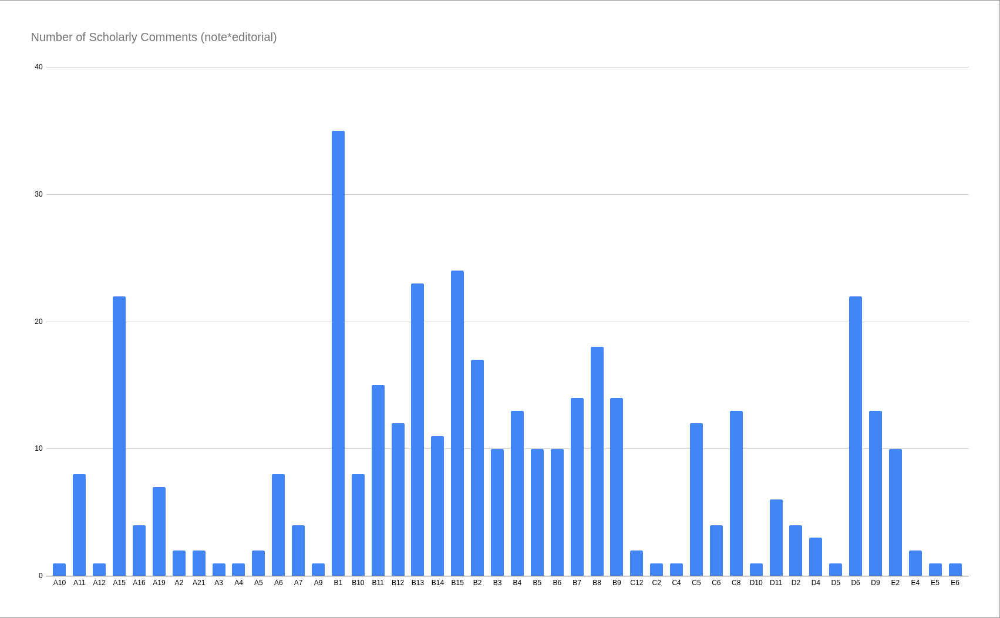
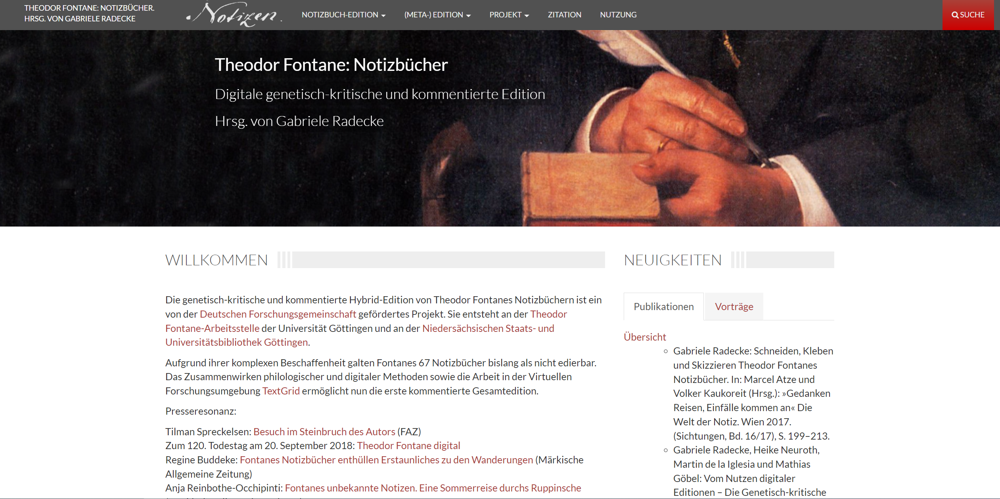
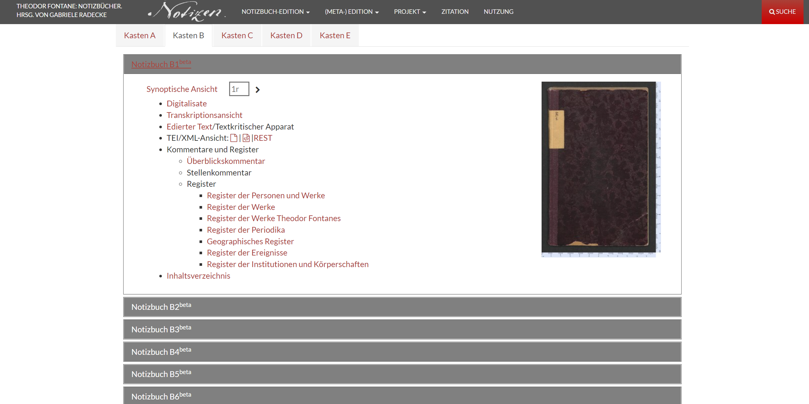
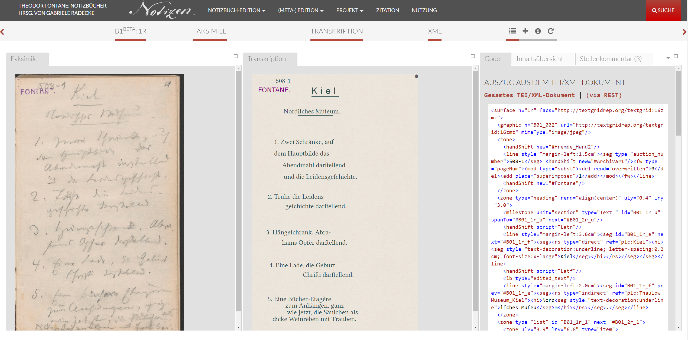
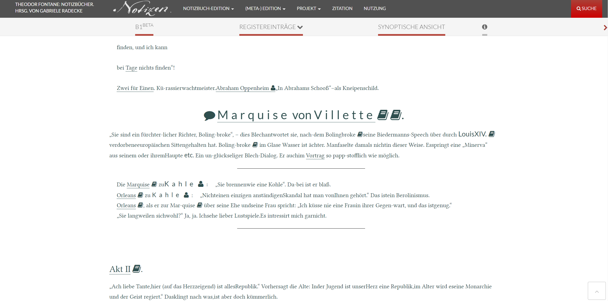

Theodor Fontane’s Notebooks: A ‘Digital Genetic-Critical and Commented Edition’
Table of Contents
Abstract
The scholarly digital edition of the Theodor Fontane: Notizbücher provides open access, for the first time, to the full scope of the 19th-century German writer’s notebooks. The project has a strong focus on the materiality of the documents, which is reflected not only in meticulous diplomatic transcriptions of Fontane’s notes, presented in their material contexts, but also in an extremely detailed documentation of the editorial principles and guidelines. The edition, thus, situates itself in an increased scholarly interest in materiality and mediality in the humanities since the ‘material turn’. Particularly, the edition contributes to a reassessment of the genre of the notebook as a portable “writing lab”. Notwithstanding these major achievements, questions remain regarding the present status and future development of the digital edition project, which was funded from 2011 to 2019. The edition interface is still a beta version and work on the scholarly commentary seems unfinished. This review ends with some specific suggestions on how to improve the digital edition’s accessibility and the reusability of its data.
Introduction
Theodor Fontane (1819–1898) is one of the most iconic German writers in the 19th century; a fact attested by the major commemorations that were dedicated to him in 2018 on the 120th anniversary of his death and in 2019 on the 200th anniversary of his birth. In the context of these jubilees, the digital edition of Fontane’s notebooks attracted media interest and strongly informed the 2019 fontane.200 exhibitions (Bisky 2019).
Edited by Gabriele Radecke and her team and based at the University of Göttingen’s Theodor-Fontane-Arbeitsstelle and the Göttingen State and University Library, the edition offers a fresh and timely approach to Fontane’s notebooks and thereby contributes to current debates on materiality in literary studies and textual scholarship. The edition project was funded by the German Research Foundation (2011–2019) and the Brougier Seisser Cleve Werhahn Foundation (BSCW) (2018) and is still a work in progress. As will be shown in the following, the edition has set itself ambitious goals and has evolved over the years through the participation of a large project team.
The following paragraphs outline the digital edition’s contents, objectives, editorial methods and practices, as well as the online presentation of edition materials (see Sahle 2014). A separate section of this review discusses the application of the FAIR principles (Gengnagel et al. 2022). Finally, we address some open questions and areas of further development.
Digitally Editing Theodor Fontane’s Notebooks
Scope and Content
The digital edition presents all of Theodor Fontane’s 67 notebooks that have been preserved from the period 1860 to 1886. Those notebooks contain snippets of writing, such as literary drafts, prefaces, tables of contents, literary criticism, draft letters, observations made during journeys, records of conversations and lectures, notes on theatrical performances, descriptions of museal exhibits and buildings, excerpts of inscriptions and books, diary-like entries, to-do lists, financial calculations, and timetables; as well as several hundred drawn sketches and pasted clippings that add up to a non-linear pastiche of text and image. Fontane collected these heterogeneous materials to serve as ‘raw material’ in his creative process. They can, therefore, offer insights into the development of his works as well as into the minutiae of the writer’s daily life and work, especially in the context of Fontane’s travels to and within Bohemia, Silesia, Denmark, France, Italy, Switzerland, Austria, and Germany. 21 notebooks are related to Fontane’s travels within the German province of Brandenburg, which became the basis for his later book series Wanderungen durch die Mark Brandenburg [Walks through the Province of Brandenburg] (1862–1889). Another 15 notebooks are mainly dedicated to dramatic performances in Berlin and were used by Fontane for his theatrical reviews. Furthermore, notebooks contain draft versions of his historical narratives Der deutsche Krieg von 1866 [The German War of 1866] (1872), Kriegsgefangen [Prisoner of War] (1870–1871), and Aus den Tagen der Occupation [The Days of Occupation] (1871–1872); of his novels Vor dem Sturm [Before the Storm] (1878), L’Adultera [Woman Taken in Adultery] (1882), Schach von Wuthenow [A Man of Honor] (1883), Irrungen, Wirrungen [Trials and Tribulations] (1888), Cécile (1887), Ellernklipp (1881), and Grete Minde (1880); as well as of poetic works and unfinished prose texts. The contents, provenance, archival and editorial history, and reception of the notebooks are detailed in the of the edition website.
The edition offers facsimiles, diplomatic transcriptions, TEI/XML code, “edited texts” (approximating reading versions of the texts), contents (per page and per notebook), commentary (partly available), and detailed metadata. The latter has a specific focus on material features and the physical conditions of the original objects, including hands, descriptions of handwriting, text types, contents, writing devices, format, and binding. The documentation of the editing principles is very detailed. Furthermore, there are lists of abbreviations, special characters, and editorial markings, bibliographies of primary and secondary literature, as well as various indices (events, institutions, persons, places, works in general and by Fontane, and periodicals). Finally, the website offers paratextual information on the project, the project team, and related institutions, as well as citation recommendations and licensing information.
Aims and Methods
The edition identifies its approach as “genetic-critical”, without further elaborating on the precise objectives of such an undertaking. The question whether an edition can count as ‘genetic’ is often difficult to answer, and there is a large grey area between what may be regarded as a fully genetic edition, on the one hand, and what might be more appropriately described as a “documentary edition […] which attempts to reproduce a certain degree of the peculiarities of the document itself, even if this may cause disruption to the normal flow of the text presented by the document” (Pierazzo 2014), on the other hand. The detailed section on the “Prinzipien der textkritischen und genetischen Apparate” [“Principles of critical and genetic apparatuses”] documents how (micro)genetic information – revision processes that include deletions, additions, and overwritings within the same document – are encoded in the TEI/XML markup and represented on the user interface.1 Thus, the edition provides data that can help to (interpretatively) reconstruct aspects of Fontane’s writing process, and, in that sense, qualifies as a genetic edition.2 However, it does not exhaust the full scope of what might be expected of a genetic approach. Especially, it does not provide the basis for engaging with the notes’ macrogenetic relations to subsequent stages in the composition processes of Fontane’s literary texts. While the edition places its explicit focus on Fontane’s notebooks rather than on his oeuvre in its entirety, the specific quality of the notebooks as reservoirs of creative ‘raw material’ would be more fully exploited if the notes’ relations to further instantiations of the writer’s works were highlighted – thus enabling an analysis across multiple stages of the texts’ composition. This might be achieved by means of visual tools (graphs, timelines, relationship networks) and/or information in the apparatus on corresponding text passages in subsequent developments of the text.3
What makes this digital edition unique is its explicit focus on the materiality of the documents. Previous publications of the contents of Fontane’s notebooks followed a thematic approach and would blur the boundaries between the genres of notebook and diary. Rather than presenting the notes detached from their original material and medial contexts, the Theodor Fontane: Notizbücher edition foregrounds these contexts. Such an approach has two major implications: first, the individual notes, sketches, and clippings are presented in a way that depicts the organic relationships in which they were created; second, the edition centers the physical object of the notebook, thereby contributing to a reevaluation of the genre of the notebook in general and its important position within Fontane’s oeuvre more specifically.4 The edition spotlights the notebook as a unique genre that is distinguished by particular material affordances and practices: the non-linear arrangement, the assembly of heterogeneous text types, and the extension of the existing format by means of cutting out and pasting in. The digital edition’s primary achievement is to enable the study of the writer’s notebooks, which present a “writing lab”, (Villwock 2009, 105). The edition aims to stimulate fresh research into the Fontane notebooks and to provide a model for other edition projects working with similarly complex materials.
In the edition’s introduction, the project situates itself in an increased scholarly interest in the material practices of literary production. Thus, it forms part of a larger paradigm shift towards a ‘material turn’ in the humanities that has drawn attention to the material contexts and conditions of cultural activity.5 More specifically, the project’s approach to editing the texts reflects the debate on the role of materiality in textual scholarship (see, for example, Schubert, ed. 2010).
Data and Metadata
The Edition’s Focus on Materiality
The project editors have used XML technologies to encode, annotate, and interlink the data gathered from the 67 notebooks. Paired with the TEI vocabulary, the edition follows common and standardized practices to ensure the accessibility, reusability, and long-term preservation of the data. A custom data schema was created as an ODD/XML (‘One Document Does it all’), which can be converted into various schema languages for XML (e.g. RELAX NG).6 The ODD uses standard TEI models in combination with Schematron to set rules of constraint regarding attribute values and node nesting. Conforming to principles of ‘reliability’ in scholarly editing (Burnard et al. 2007), the ODD offers a clear understanding about what to expect from the data while editors are bound by rules which limit transcription or encoding errors.
A quantitative analysis of the ODD provides valuable insights into
the data model.7 The edition’s
materially oriented approach is already reflected at this level. While not
introducing new modules to existing TEI models, the schema holds 149 element
specifications. Furthermore, with 232 attribute changes and 431 value
definitions, the schema is extensive and meticulous. Focusing, in our analysis,
on those elements which are affected by most attribute changes, the edition’s
emphasis on material features becomes particularly apparent:
<add>, <line>,
<seg>, <surface>, and
<zone> are the top five elements. This result reflects
the edition’s choice to make use of the TEI Embedded Transcription model, which is intended to encode texts
in a way that is closely intertwined with the representation of physical
surfaces. The following table shows the frequency of these TEI element nodes in
comparison with that of the <note type="editorial"> node in
all Theodor Fontane: Notizbücher TEI documents (all element nodes
listed are part of the <sourceDoc> element node). Whereas
the top five elements refer to the material character of the encoded sources,
the editorial notes are relatively sparse.
| Notebooks | <add> | <line> | <note> *editorial | <seg> | <surface> | <zone> | Total |
|---|---|---|---|---|---|---|---|
| 67 | 6.152 | 106.436 | 419 | 62.409 | 10.761 | 23.202 | 209.379 |
The TEI/XML files contain diplomatic transcriptions of all texts
with a detailed markup of material features which strive for a representation
that approximates the original materials. Each page
(<surface>) is divided into segments of geometrically
defined dimensions (e. g. <zone ulx="2.9" uly="11.1" lrx="8.9"
lry="11.3">) that determine the exact positions of text parts. The
line margins are precisely measured (e. g. <line
style="margin-left:2.4cm">ſtändlichkeiten
und</line>), and the approximate orientation of lines is
recorded (e. g. <zone […] rotate="330" […]>). Furthermore,
different hands, scripts, as well as sizes and qualities of handwriting (e. g.
<handShift script="hasty"/>) are documented in meticulous
detail. The markup also exactly renders the idiosyncratic shapes of underlines
(e. g. <hi>St<seg id="B01_2v_m" next="#B01_2v_n"
style="text-decoration:underline"
rend="underline-style:half-s-shaped(upper-left)">ände</seg></hi>),
overwritings, deletions, additions, and special characters. Finally, material
features of the writing and the material carrier, such as writing implements,
inserted paper pockets, pasted clippings, or traces of torn or cut pages, are
encoded (e. g. <surface […] type="pocket"
subtype="angeklebte_cremefarbige_Tasche_von_Fontane_angefertigt_-_Angeklebtes_Blatt"
attachment="partially_glued" […]>). High-resolution facsimiles
reproduce the pages of the notebooks including front and back covers as well as
inserted attachments.
The <teiHeader> lists the metadata, providing
detailed information on the materiality of the edited notebooks. In addition to
standard descriptive elements, such as those related to the source documents
and their archival and publication history, the descriptions of the physical
objects include measurements, writing implements, attachments and pastings,
traces of torn pages, as well as definitions of handwriting qualities.
The Editor’s Scholarly Engagement with the Notebook Contents
Beside the header’s material orientation, it includes four versions of a table of contents as part of the
<sourceDesc>: <list type="authorial"> refers to
Theodor Fontane’s own overview of the notebook contents; <list
type="Friedrich_Fontane"> contains the contents as outlined by the
writer’s son, Friedrich Fontane; <list
type="Fontane_Blätter"> records the contents as published in the
journal Fontane Blätter in 1976; <list
type="editorial"> presents the table of contents as established by
the editor. The following table shows the number of <item>
elements within each of the four categories. Radecke’s tables of contents
include 913 items, each of which provides a topic and description as well as
references to specific pages in the TEI document. The exhaustive information
provided by the editor offers fresh pathways into the wealth of materials
contained in Fontane’s notebooks and must be considered one of the edition’s
major achievements.
| Notebooks | <item> list*authorial | <item> list*editorial | <item> list*Fontane_Blätter | <item> list*Friedrich_Fontane | Total |
|---|---|---|---|---|---|
| 67 | 68 | 913 | 67 | 70 | 1118 |
Another resource encoded in the TEI documents that is related to
contents rather than to materiality is the <abstract> node,
within the <profileDesc> in the TEI header, which offers a
detailed summary. As the table below shows, this is the case in 22 of the 67
notebooks only. Within the <sourceDoc> part of the TEI
documents, as mentioned above, editorial notes offer scholarly comments.
Counting nodes and words helped to find out more about the extent of these
comments. As was shown further above, there are 419 such comments; 414 of these
have a word count greater than 5.
| <abstract> | <note> *editorial | Totals | |||
|---|---|---|---|---|---|
| Notebooks | nodes | average word count | nodes | average word count | sum of nodes |
| 67 | 22 | 70.91 | 414 | 31.11 | 436 |

The following two tables focus on data annotation and enrichment.
The first table lists all entities divided into six categories: events,
literature (cited in the TEI header), institutions, places, persons, and works
(mentioned by Fontane in his notebooks). To differentiate between entities,
each category uses a different namespace; the prefixes for the namespaces (such
as "eve") are documented in the header as part of the
<encodingDesc>. With more than forty thousand nodes, the
Fontane notebook edition (with a total word count of 415,489) would seem
appropriately enriched quantitatively (see Rockwell 2012). However, as the second table
shows, only about 14% of these nodes are linked to authority files (such as
GND, Wikidata, and OpenStreetMap), improving the quality of the markup of these
entities. Furthermore, 2,129 annotated dates (<date>)
provide researchers with historical context.
| <rs>*eve | <ptr>*lit | <rs>*org | <rs>*plc | <rs>*psn | <rs>*wrk | ||
|---|---|---|---|---|---|---|---|
| Notebooks | Events | Literature | Institutions | Places | Persons | Works | Total |
| 67 | 623 | 359 | 1,156 | 16,892 | 13,255 | 8,298 | 40,583 |
| Title | GND | Wikidata | DNB | OpenStreetMap | URN | BVB | SWB | Total (number of unique entities) | Total nodes (total number of entities) |
|---|---|---|---|---|---|---|---|---|---|
| Literature | 0 | 0 | 25 | 0 | 10 | 1 | 3 | 39 | 45 |
| Persons | 2,516 | 15 | 3 | 0 | 0 | 0 | 0 | 2,534 | 3,419 |
| Places | 1,377 | 20 | 0 | 263 | 0 | 0 | 0 | 1,660 | 2,025 |
| Total number | 3,893 | 35 | 28 | 263 | 10 | 1 | 3 | 4,233 | 5,489 |
Publication and Presentation
Technical Infrastructure
The web application is built as an eXist-db application with modules from the SADE Scalable Architecture for Digital Editions. The application combines XQuery and XSLT scripts using Apache Ant for the build process. As a tool for text transcription, annotation, and other encoding, the project has used TextGrid; according to the editors, long-term data preservation as well as publication and data reuse is provided through the TextGrid repository as well. However, whereas the notebook facsimiles (as well as other images) are available, the TEI/XML edition files are currently not accessible via TextGrid. TextGrid provides technical metadata (in XML format) for these images as well as persistent identifiers (hdl). Besides URLs for images on TextGrid, the TEI documents of the digital edition include several other TextGrid URIs, such as those used in the TEI header to identify the namespaces for different entities (see above). The technical framework, or source code, that includes the eXist-db application, SADE modules, and SADE-TextGrid connector are hosted at the University Computing Centre in the Georg-August-Universität Göttingen GitLab repository.
Start Page and Search

The search input takes users to a search page, which permits a full-text document search (there is no site search), and yields results in KWIC format. The search documentation of the edition provides a detailed explanation of the supported features. In addition to features such as phrasal search and a thesaurus function, search features include wildcards and filters (facets) as well as Boolean operators and regular expressions. The filter parameters to limit the search range from entity categories, like persons or places, to specific writing styles (“Duktus”). The documentation also lists features which are not supported as well as search limitations. For instance, there is no option to limit the search to specific notebooks.
The usability of the search features is restricted. Searching for very specific results, with a small amount of search hits, works very well. However, when the text search is left empty and no filters are selected, the search engine tries to fetch all data and loads for several minutes. Also, when only selecting filters, the amount of data the engine fetches can be very large. In addition, search hits do not seem reliable when comparing the number of hits against the values displayed next to each filter category. This problem could be related to fetching too much data. We recommend switching off data fetching when no search values are selected (that is, when no search terms are entered and no filters are selected) and implementing limits that instruct users to specify their search input.
Edition Pages



(Meta-)Edition
The extensive “(Meta-)Edition” section of the Fontane notebooks edition must be considered an outstanding scholarly achievement that bears witness to the meticulous research underlying the entire project. An introduction provides a helpful definition of the notebook genre itself and its status within Fontane’s literary production, and details the scope, provenance, contents, material conditions, publication history, and reception of the writer’s notebooks.
The editorial documentation (beta) offers a painstakingly detailed and comprehensive overview of editorial principles, guidelines, and decisions. Beyond making transparent the editor’s work in detail, it stakes a claim to being a reference work for future digital editions of Fontane’s letters and works, and even for editions of other writers’ notebooks. The individual documentation items, addressing issues such as hands, fragments of torn pages, or grease spots, providing facsimiles and the corresponding TEI/XML code snippets, can be compared, with regard to their comprehensiveness and attention to detail, to the documentation provided for edition humboldt digital. However, as the documentation (in fact, the entire edition) is available only in German, its international reach will remain limited. (In the case of the Humboldt edition, extensive contextual information is provided in English even though the documentation of editorial principles is in German only, too.)
Furthermore, the “(Meta-)Edition” includes a comprehensive table of contents (across all notebooks), separate lengthy tables of (editorial) abbreviations, special characters, and editorial marks, as well as a comprehensive bibliography. There are indices of events, institutions, persons, places, works, and periodicals. Instead of being taken to lists of entries, however, the user finds an interface to search the indices (not to be mistaken with the full-text search function). The entries yield information related to norm data (linked to DNB and Wikipedia), selected key dates, and links to relevant passages in the notebook documents, and are available in XML output format. However, they offer little context regarding their relation and relevance to Fontane and his work.
Fontane FAIR
Findability
The Theodor Fontane: Notizbücher edition is listed in the two major catalogues of scholarly digital editions (Franzini et al. 2012, Sahle et al. 2020–), and can also be found through the catalog of the German National Library. In Google, the search items “fontane notizbücher” and “fontane edition” return the edition as the first hit each; in the DuckDuckGo search engine, the edition is among the top three results; in Bing, among the top four (accessed 6 September 2022). The edition data cannot be found via Zenodo, the DARIAH-DE Collection Registry, or Humanities Commons. The project uses the TextGrid repository for data publication. Currently, images as well as metadata in RDF/XML format about these images are available together with persistent handle identifiers (see above).
Accessibility
All parts of the edition are freely accessible without restrictions or paywall. At the same time, the edition does not even offer a basic English-language summary, which ultimately results in a reduced accessibility for international users who are interested in general information on the project. However, groups among German-language users might also find it difficult to approach and engage with the presented materials due to limited navigation. While the documents can be accessed through the nested system of box and notebook categories, the table of contents, or the search function, there are no alternative entry points to the documents (e. g. straight from the start page). Providing access on different levels of complexity and prerequisite knowledge could make it easier to attract target groups outside the scholarly community whose members usually have a clear idea of what they are looking for.
The exist-db application offers a basic RESTful API to access the data via an HTTP client. For each of the notebooks, a link to the API is offered, which allows users to download the individual TEI document. As no aggregate download is provided, only users with programming knowledge are able to download the entire collection at once.
Interoperability
The digital edition of the Theodor Fontane: Notizbücher uses TEI/XML encoding, the most widely accepted format in the digital editing of primarily textual materials. The XML format used for data storage is open source and widely used; many software libraries are available that make XML-encoded data interoperable. By virtue of the TEI vocabulary, the data schema is descriptive and widely comprehensible. Facsimiles and other images are aggregated through a IIIF server hosted on the TextGrid repository storing a IIIF manifest.
Reusability
The data creation and modeling are rendered highly transparent through the edition’s detailed editorial documentation. The data output of the project provided in XML format can be accessed via the web application. A download of individual resources is offered with the web application’s RESTful API; an aggregate download is not available. The editors’ notes on data publication via the TextGrid repository so far only holds true for facsimiles and other images.
Several license issues have to be considered when using this collection. Facsimiles and images are in the public domain and are freely available under a CC0 license. The source code of the web application is hosted on a GitLab instance using a GNU LGPL 3.0 license. The same license is used for the TEI schema ODD. The LGPL 3.0 license stipulates that there are no limitations on how to use the source code besides disclosing the creators and all changes made to the code; it is also necessary to publish any derivatives of the code with the same license while the creators do not offer warranty or liability.
Most importantly, the online edition, i. e. all TEI/XML documents including indices but excluding the schema ODD, is published under a CC BY-NC-ND 4.0 license. This license limits the reusability of the data: not only must the material not be used for commercial purposes, but also derivatives are not allowed – in short, this is a read-only license. This means, for instance, that the data cannot be connected with other collections and republished in a new data set; but also that the edition data may not be further developed, e.g. in the context of another project.
Concluding Remarks: Open Questions and Suggestions
The Theodor Fontane: Notizbücher scholarly digital edition makes a number of key contributions to the fields of Fontane scholarship and digital editing. Most notably, it provides open access, for the first time, to the full scope of the writer’s notebooks in various, human-readable and machine-readable, formats. What must be regarded as the edition’s unique achievement is that it provides the user with a feel for the original material contexts of the notes and for the notebooks as physical objects. Thereby, it ties in with a vivid discourse on materiality in the humanities, in the context of which it sheds new light on the notebook genre.
This review has specifically paid attention to the FAIR criteria. The online edition meets the key requirements of being findable, accessible, and interoperable – with limitations regarding aspects such as the edition’s language barrier and missing provisions for an aggregate download of data. The reusability of the data is restricted by its CC BY-NC-ND 4.0 license, however. While the edition can be cited as a bibliographic resource, the no-derivative component therefore limits the usage of the data.
One important issue that has arisen during the review process is related to the edition’s unclear current status and future development. The edition pages as well as the documentation on the website are at beta stage. Furthermore, especially the uneven distribution of annotations across different notebooks (see above) would seem to indicate that the editorial work is still in progress, and, in any case, incomplete. According to the editorial team, work on the transcripts, comments, and indices will be continued even after large-scale third-party funding ran out in 2019. An information section on the start page informs the user that the final notebooks were released on the edition website in December 2019. The news section (“Neuigkeiten”) appears dated: the last entries in this section refer to public events that took place in 2019; the most recent scholarly article dates back even further, to the year 2017.
In particular, it remains unclear whether the original plan for a hybrid edition, including a print as well as an e-book edition of the notebooks, has been discarded: in the XML documents, the TEI header announces a “Historisch-kritische und kommentierte Edition” (“historical-critical and commented edition”) to be “in Vorbereitung” (“in preparation”) and forthcoming with de Gruyter publishers. Part VI of the documentation (dated 6 October 2016) specifically outlines the principles underlying a three-volume book edition. No further details are provided as to the prospective publication date(s) of this hybrid edition. It is equally uncertain which specific benefits a print edition would add to the project apart from a more readable version of the notebook texts; then again, it would be difficult to see why such a reading version should not form part of the digital edition. Plans for a hybrid edition are mentioned also in the third paragraph of the (undated) project description which is accessible through a direct link on the start page. A more recent version of that description, dated 15 July 2022, which can be reached through the “Projekt” tab of the navigation menu, no longer refers to the project as a hybrid edition.
We would like to end this review with a few suggestions for improvement. It would seem desirable to have easily readable versions of the notebook texts with visually regularized presentations of Fontane’s notes (with regard to horizontal and vertical margins, fonts, and font sizes). Furthermore, a more liberal CC license (such as CC BY 4.0 or CC BY-SA 4.0) would strongly increase the edition’s reusability, enabling further publishing of the data in different formats depending on different research interests. Lastly, the Theodor Fontane: Notizbücher digital edition’s accessibility would be greatly served by a more intuitive interface usability in some places, and, especially, a start page that offers multiple access points into the edition materials, aiming to attract a wider range of user groups.
Bibliography
- Bisky, Jens. 2019. “Interessantheitshöhepunkte.” Süddeutsche Zeitung Online. https://web.archive.org/web/20230120155656/https://www.sueddeutsche.de/kultur/theodor-fontane-rezeption-fontane-jahr-1.4738966.
- Burnard, Lou, O’Keeffe, Katherine O’Brien, and John Unsworth. “Electronic Textual Editing: Principles.” 2007. The TEI Archive. https://web.archive.org/web/20230120155704/https://tei-c.org/Vault/ETE/Preview/principles.html.
- Franzini, Greta, Andorfer, Peter, and Ksenia Zaytseva. 2012–. Catalogue of Digital Editions. https://web.archive.org/web/20230120161554/https://dig-ed-cat.acdh.oeaw.ac.at/.
- Gengnagel, Tessa, Neuber, Frederike, and Daniela Schulz. 2022. “Criteria for Reviewing the Application of FAIR Principles in Digital Scholarly Editions, Version 1.1.” RIDE: A Review Journal for Digital Editions and Resources. https://web.archive.org/web/20230120155729/https://ride.i-d-e.de/fair-criteria-editions/.
- Hicks, Dan, and Mary C. Beaudry, eds. 2010. The Oxford Handbook of Material Culture Studies. Oxford: Oxford University Press.
- Neuber, Frederike. 2013. “The Shelley-Godwin Archive: The Edition of Mary Shelley’s Frankenstein Notebooks.” RIDE: A Review Journal for Digital Editions and Resources 2. Accessed January 3, 2023. https://doi.org/10.18716/ride.a.2.5.
- Pierazzo, Elena. 2014. “Digital Documentary Editions and the Others.” Scholarly Editing: The Annual of the Association for Documentary Editing 35: 1–23. https://web.archive.org/web/20230120160647/https://scholarlyediting.reclaim.hosting/se-archive/2014/pdf/essay.pierazzo.pdf.
- Rockwell, Geoffrey. 2012. “Short Guide to Evaluation of Digital Work.” Journal of Digital Humanities, 1 (4). https://web.archive.org/web/20230120155917/http://journalofdigitalhumanities.org/1-4/short-guide-to-evaluation-of-digital-work-by-geoffrey-rockwell/.
- Sahle, Patrick (with contributions by Georg Vogeler et al.). 2014. “Kriterien für die Besprechung digitaler Editionen, Version 1.1.” RIDE: A Review Journal for Digital Editions and Resources https://web.archive.org/web/20230120160031/https://www.i-d-e.de/publikationen/weitereschriften/kriterien-version-1-1/.
- Sahle, Patrick, Vogeler, Georg, Klinger, Jana, Makowski, Stephan, and Nadine Sutor. 2020–. A Catalog of Digital Scholarly Editions. https://web.archive.org/web/20230120155926/https://www.digitale-edition.de/exist/apps/editions-browser/index.html.
- Schubert, Martin, ed. 2010. Materialität in der Editionswissenschaft. Special issue of editio. Berlin: De Gruyter.
- Van Hulle, Dirk. 2021. “Dynamic Facsimiles: Note on the Transcription of Born-Digital Works for Genetic Criticism.” Variants: The Journal of the European Society for Textual Scholarship 15–16: 231–241. Accessed January 3, 2023. https://doi.org/10.4000/variants.1450.
- Villwock, Peter. 2009. “Prolegomena zu einer kritischen Ausgabe der Notizbücher Bertolt Brechts.” editio, 23: 71–108.
Notes
- See, for instance, Van Hulle 2021 for the distinction between ‘microgenetic’ and ‘macrogenetic’ information. ↑
- See Van Hulle 2021 for the difficulty of reconstructing writing sequence from manuscripts. ↑
- A similar problem is discussed in Neuber 2013. We wish to thank the anonymous reviewer and the journal editors for their valuable input on this specific matter. ↑
- Recent digital-edition projects have been contributing to an increased scholarly interest in the notebook genre, see the digital edition of Italian politician Paolo Bufalini’s notebook (2020) as well as the ongoing project (2021–2024) dedicated to creating an edition of the Austrian writer Peter Handke’s notebooks at the Austrian National Library. ↑
- For an overview of the wide range of disciplinary perspectives on material-cultural practices, see, for instance, the contributions to Hicks and Beaudry, eds., 2010. ↑
- The ODDs for the edition and its indices can be found via https://web.archive.org/web/20230120154847/https://fontane-nb.dariah.eu/rest/data/3r93w.xml and https://web.archive.org/web/20230120154848/https://fontane-nb.dariah.eu/rest/data/3r93z.xml, respectively. ↑
- The scripts that we have used to quantitatively analyze the edition data (including all indices and ODDs) are available via GitHub under an MIT license. The program code (created using Python) includes an aggregate data download of the entire collection of TEI/XML files that accesses the eXist-db’s basic RESTful API as well as additional functions to process and analyze the data. Each TEI/XML file is parsed with lxml, a Python library for manipulating XML and HTML files. By means of XPath queries, XML nodes have been accessed and counted. For the word count, values separated by whitespace have been stored in lists, whose lengths have been interpreted as the number of words. Parsing XML with lxml can return additional whitespaces for text nodes, so that a certain error rate has to be taken into account. ↑
@article{fontane-notebooks,
author = {Frühwirth, Timo and Mayer, Sandra and Stoxreiter, Daniel},
title = {Theodor Fontane’s Notebooks: A ‘Digital Genetic-Critical and Commented
Edition’},
journal = {RIDE – A review journal for digital editions and resources},
number = {16},
year = {2023},
doi = {10.18716/ride.a.16.4},
url = {https://doi.org/10.18716/ride.a.16.4},
}TY - JOUR
AU - Frühwirth, Timo
AU - Mayer, Sandra
AU - Stoxreiter, Daniel
TI - Theodor Fontane’s Notebooks: A ‘Digital Genetic-Critical and Commented
Edition’
T2 - RIDE – A review journal for digital editions and resources
IS - 16
PY - 2023
DA - 2023/03
DO - 10.18716/ride.a.16.4
UR - https://doi.org/10.18716/ride.a.16.4
PB - Institut für Dokumentologie und Editorik e.V.
LA - en
ER - Frühwirth, T., Mayer, S., & Stoxreiter, D. (2023). Theodor Fontane’s Notebooks: A ‘Digital Genetic-Critical and Commented
Edition’. RIDE – A review journal for digital editions and resources, (16). https://doi.org/10.18716/ride.a.16.4Frühwirth, Timo, et al.. "Theodor Fontane’s Notebooks: A ‘Digital Genetic-Critical and Commented
Edition’." RIDE – A review journal for digital editions and resources, no. 16, 2023. https://doi.org/10.18716/ride.a.16.4.Frühwirth, Timo, Sandra Mayer, and Daniel Stoxreiter. "Theodor Fontane’s Notebooks: A ‘Digital Genetic-Critical and Commented
Edition’." RIDE – A review journal for digital editions and resources, no. 16 (2023). https://doi.org/10.18716/ride.a.16.4.